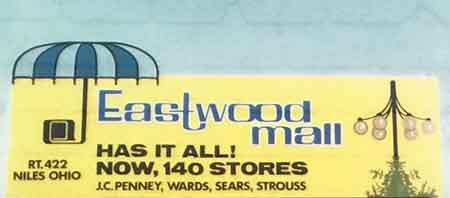
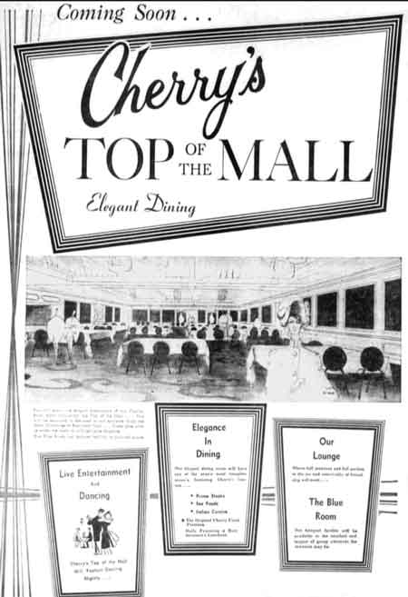
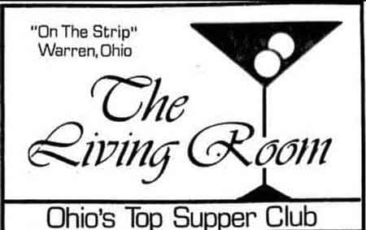
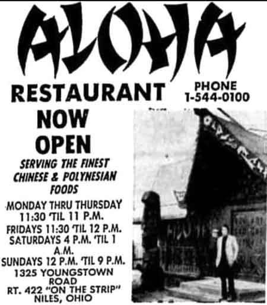

Ward-Thomas Museum


Eastwood Mall
Ward — Thomas
Museum
Home of the Niles Historical Society
503 Brown Street Niles, Ohio 44446
Click here to become a Niles Historical Society Member or to renew your membership
Click on any photograph to view a larger image, click on image again to zoom into photograph.
|
The Eastwood Mall from an aerial viewpoint. Dated 1976 PO1.264 Eastwood Mall main entrance, 1970. |
Eastwood Mall Eastwood Mall opened in 1969 with Sears, Strouss,
Montgomery Ward, and Woolworth as anchors. It was the first mall
to feature both Montgomery Ward and Sears. The JCPenney wing was
added in 1979. Montgomery Ward closed in 1984, and its building
was split among Gold's Gym (now a local gym), Toys “R”
Us, and Carlisle’s. Advance Auto Parts was built across
the street from the mall in 1992. After Carlisle's closed in 1994
and Toys “R” Us moved to a new store, those spaces
both became Dillard’s. Target was added onto the mall in
2000. |
|
| |
||
|
William Cafaro and wife with Miss USA at the grand opening of the Eastwood Mall. Construction of Eastwood Mall, 1968. Front of the Eastwood Mall, highlighting the Strouss Department Store, 1976. PO1.254 Construction of the J.C. Penney Wing of the Eastwood Mall.
|
It took years of planning for the mall to come to fruition. As some may remember, prior to the erection of the mall, that area along Rt 422 was home to Eastwood Golf Course. In September 1966 Niles bid to annex a huge area of 113.4 acres from Howland Township along Rt 422 for the construction of an $8 million plaza by William Cafaro and Associates. (The parcel remained with Howland School District.) This would not only alter the physical boundaries of the city but the proposed ultra modern shopping facility would change Niles commerce forever. Such a shopping concept was new to the area. The plaza would be entirely enclosed and air conditioned in the summer and heated in the winter! The proposed mall would be constructed in a “T” formation. John Cafaro was superintendent of the mall’s construction. This huge undertaking required 12 miles of water pipes, 2000 tons of steel and 8 miles of duct work not to mention 2,500,000 cement blocks and 64,500,000 pounds of concrete. The blueprints alone consumed 10 1/2 tons of paper. When completed the concourse featured high teardrop ceilings, tropical plants and sweeping fountains which were reputed to be the most elaborate water display in the country and merchandising world. 25,000 gallons of water was continually circulated through them. Center concourses could be converted into stand-alone stages. Gold canopies marked each entrance. Eastwood Mall was featured in various trade magazines for these amenities, its 3,800 car parking lot and for having the largest electrical transformer in the nation. 3000 jobs were created with more added for the holidays. The official ribbon cutting was held on Wednesday September 17, 1969 with Miss USA in attendance. A fireworks display was set off the following Saturday and special events continued for ten days. The newspaper noted "At night the mall looked like a sparkling diamond in solitaire setting as the only illuminated site on the north side of the highway close to the intersection of Rt 46." It was the hope that the Eastwood Mall would attract not only shoppers but be an outstanding attraction for visitors and guests to the area. And it has. The mall’s 90 stores had something for everyone. Some stores such as Sears had actually opened earlier. Montgomery Wards was the largest store and included a warehouse and auto center. Shoes could be purchased at Nobil’s, Lustig’s, Kinney’s, Regal’s or many other stores. Hughes and Hatcher, Hartzell’s Rose and Son, Bond and Gentry, and National Shirt featured menswear. Women shopped at Livingston’s, Learner’s, McKelvey’s Loft, Rappold’s and Ormond’s. Sewers could buy supplies at So-Fro Fabrics, The Fabric Tree and Singer Sewing Center. Hungry shoppers could stop in Sweet Williams, Harvest House Cafe or enjoy a special evening at Cherry’s Top O’ the Mall. The A&P sold groceries and movies were shown at Loew’s Theatre. Sundries could be picked up at Gray Drug or Woolworth’s. The Second National Bank’s new office offered banking from your car via closed circuit TV. Many businesses have come and gone in the almost 50 years of the mall. Strouss became Kaufman’s and now Macy’s. General Nutrition Center, Sears and Memory Lane are a few of the original stores that remain. The fountains have been replaced with seating areas with big screen TVs. Restaurants are now located in the Food Court. The carousal is gone but there is a children’s play area, a train to ride and fish to see in the aquarium. Santa still comes every Christmas. The area is now known at the Eastwood Mall Complex and includes many surrounding plazas, restaurants, hotels and even a baseball stadium. The Cafaro corporate offices moved to a newly constructed section of the mall recently. This brought 200 additional jobs and business to Niles. Already one of the largest shopping venues in the nation, still more features are being planned for the area. While other malls throughout the country have fallen on hard times, William Cafaro’s “Impossible Dream” of an enclosed plaza called Eastwood Mall continues to thrive. Thelma Snyder |
|
| |
||
|
Cherry’s Top-o-the-Mall, 1970. |
Advertisement for Cherry’s |
Interior view of Cherry’s dining room. |
| |
||
|
Concourse with Strouss, Wild Pair, Regal Shoes,
Woolworths, and Frontier Fruit & Nut. |
 |
Two-level Carousel |
|
The removal of the interior fountains in the
main concourse of the Eastwood Mall. |
The Eastwood Mall during the complete renovation of the interior, including removal of the fountains. Dated February 14, 1994. PO1.283 |
The interior of the Eastwood Mall during the complete renovation including removal of the fountains. Dated September 30, 1994 PO1.287 |
| |
||
The north concourse of the Eastwood
Mall during the renovation of the interior. |
The interior staircase located
in the main entrance of the Eastwood Mall during the complete
renovation in the 1990's. |
The inside of the Eastwood Mall
during the complete renovation which included the removal of
the fountains. |
Original staircase, 1970. S11.182 |
The staircase inside the main entrance in the Eastwood Mall during renovations in the 1990's. Dated March 3, 1995 PO1.308 |
The escalator inside the main front entrance of the Eastwood Mall during renovations in the 1990's. Dated Feb. 25, 1995 PO1.309 |
The interior of the Eastwood Mall
main concourse during the renovation that led to the removal
of the fountains. Dated February 17, 1995. |
Photo taken of the interior of
the Eastwood Mall north concourse during renovations that included
the removal of the fountains. |
Harvest House Cafeteria |
Photo taken of the model geodesic dome house displayed inside the Eastwood Mall, spring, 1985. PO1.277 |
The interior of the Eastwood Mall during the complete renovation including removal of the fountains. Dated September 30, 1994 PO1.286 |
York Steak House |
The entrance to the Eastwood Mall during the renovation. Dated November 18, 1994. PO1.293 |
The exterior of the main entrance to the Eastwood
Mall during renovation. |
 Original Eastwood Mall Umbrella Logo |
Exterior of VIP Restaurant. Interior of VIP Restaurant. |
The “Strip” consisted of the Eastwood Mall and many fine restaurants, many of which featured live entertainment. A partial list of the restaurants on the “Strip” Alberinis Brown Derby Cafe 422 El Rio Flamingo Living Room Town & Country
The VIP Restaurant and Entertainment had a large dance floor and nightly bands. |
|
|
Living Room Restaurant on the “Strip”. Exterior View and Interior Views. |
||
 |
 Advertisements for Cherry’s Top of the Mall, The Living Room and the Aloha restaurants on the Strip in Niles, Ohio. ca 1970s |
 |
|
|
||


{kind=link}
{kind=link}
{kind=link}
{kind=link}
{kind=link}
{kind=link}
{kind=link}
{kind=link}
{kind=link}
{kind=link}
{kind=link}
{kind=link}
{kind=link}
{kind=link}
{kind=link}
{kind=link}
{kind=link}
{kind=link}
{kind=link}
{kind=link}
{kind=link}
{kind=link}
{kind=link}
{kind=link}